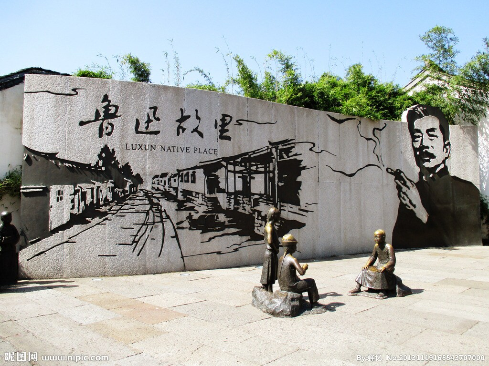

杭州（简称“杭”），浙江省省会，位于中国东南沿海、浙江省北部，副省级市。
杭州自秦朝设县治以来已有2200多年的历史，曾是吴越国和南宋的都城。杭州也是浙江省的政治、经济、文化、教育、交通和金融中心，
是长江三角洲城市群中心城市之一、环杭州湾大湾区核心城市、长三角宁杭生态经济带节点城市、中国重要的电子商务中心之一。
- 
杭州（简称“杭”），浙江省省会，位于中国东南沿海、浙江省北部，副省级市。
杭州自秦朝设县治以来已有2200多年的历史，曾是吴越国和南宋的都城。杭州也是浙江省的政治、经济、文化、教育、交通和金融中心，
是长江三角洲城市群中心城市之一、环杭州湾大湾区核心城市、长三角宁杭生态经济带节点城市、中国重要的电子商务中心之一。